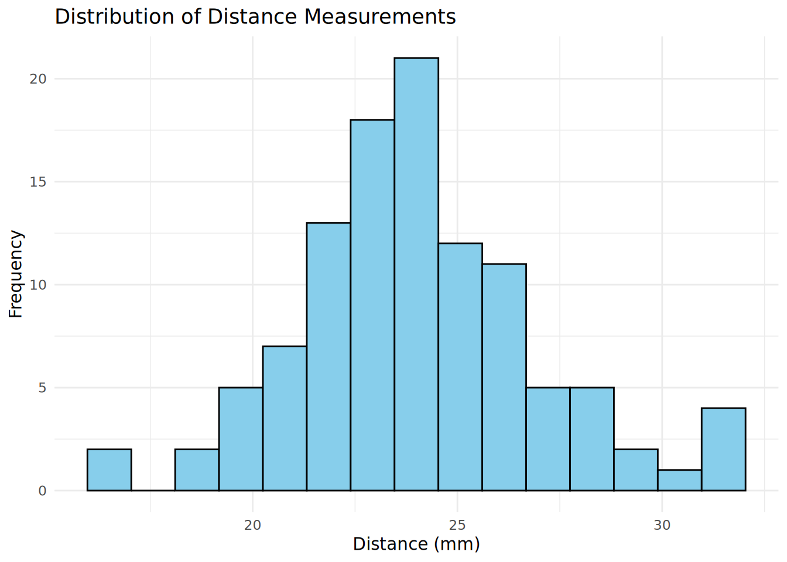
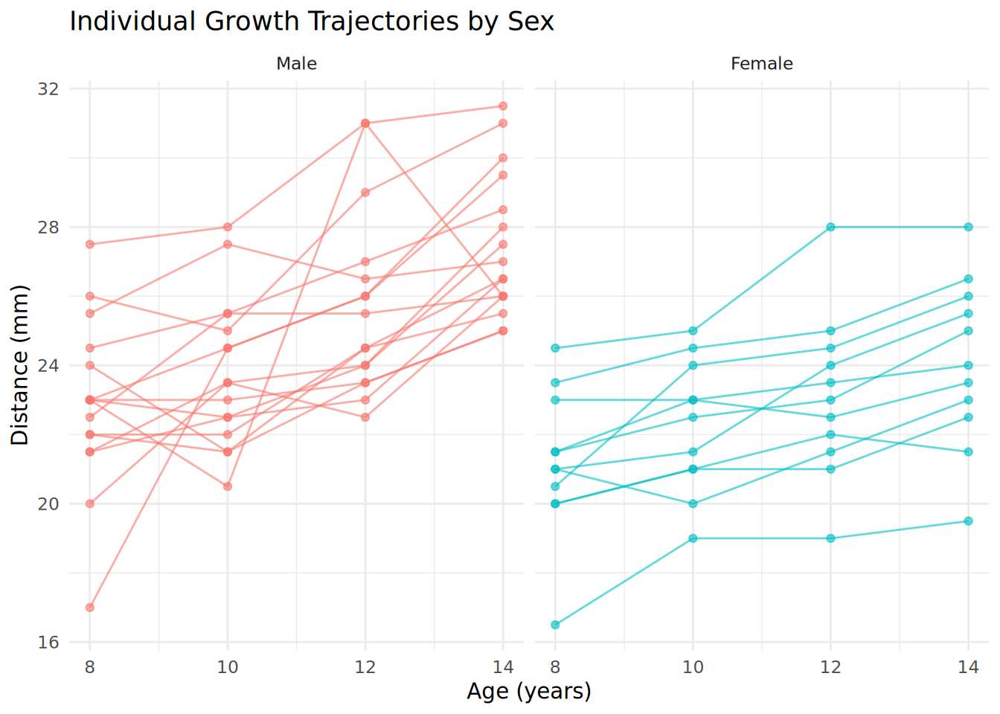
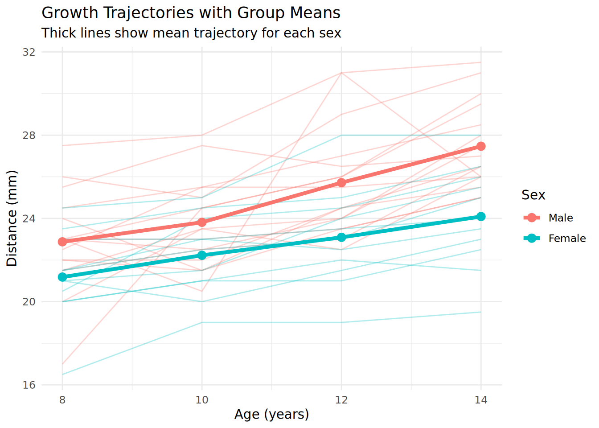
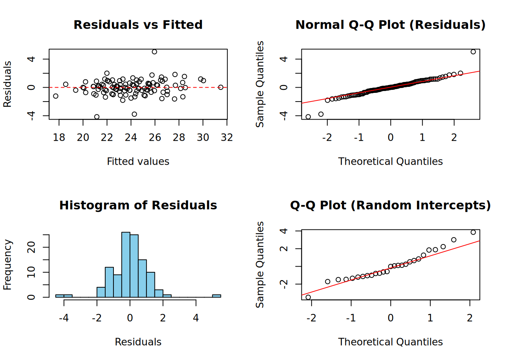
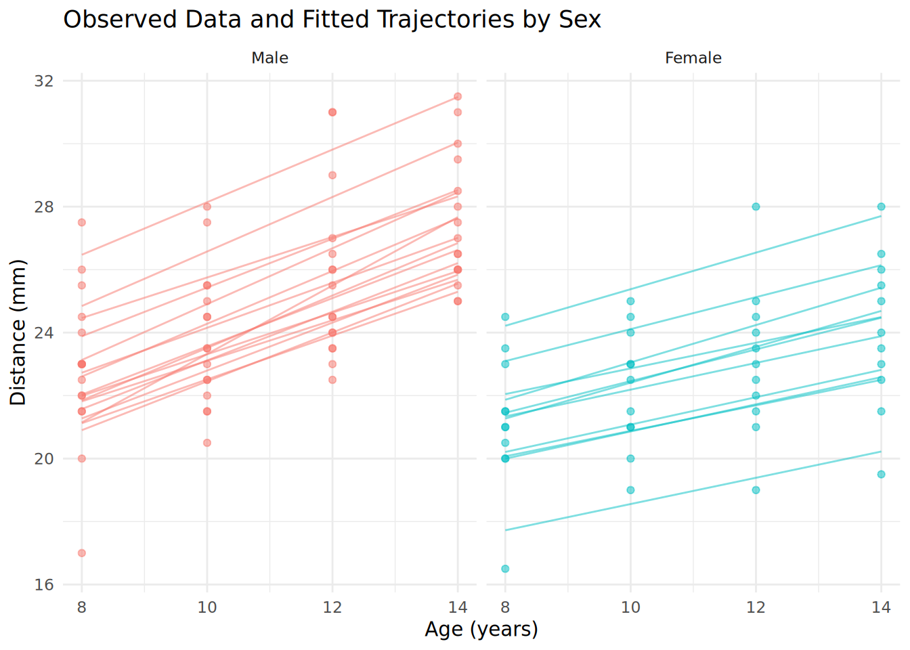

# Check whether pacman is available and install if needed
options(repos = c(CRAN = "https://cloud.r-project.org"))
if (!requireNamespace("pacman", quietly = TRUE)) install.packages("pacman")
# Use pacman to install (if needed) and load the required packages
pacman::p_load(dplyr, ggplot2, lmerTest, nlme)Assignment 6: Longitudinal Analysis of Dental Growth
Model answer
Orthodont Data: Dental Growth Study
The Orthodont dataset comes from a longitudinal study of dental growth. The distance (in mm) from the pituitary gland to the pterygomaxillary fissure was measured at ages 8, 10, 12, and 14 years for 27 children (16 boys and 11 girls). This is a classic dataset for demonstrating growth curve modeling.
The dataset contains the following variables:
- distance: The distance from the pituitary to the pterygomaxillary fissure (mm)
- age: Age of the child in years (8, 10, 12, or 14)
- Subject: Unique identifier for each child
- Sex: Sex of the child (Male or Female)
Loading and Preparing the Data
# Load the data from the nlme package
data(Orthodont, package = "nlme")
# Convert to a regular data frame
ortho_data <- as.data.frame(Orthodont)
# Inspect the structure
str(ortho_data)'data.frame': 108 obs. of 4 variables:
$ distance: num 26 25 29 31 21.5 22.5 23 26.5 23 22.5 ...
$ age : num 8 10 12 14 8 10 12 14 8 10 ...
$ Subject : Ord.factor w/ 27 levels "M16"<"M05"<"M02"<..: 15 15 15 15 3 3 3 3 7 7 ...
$ Sex : Factor w/ 2 levels "Male","Female": 1 1 1 1 1 1 1 1 1 1 ...# Summary statistics
summary(ortho_data) distance age Subject Sex
Min. :16.50 Min. : 8.0 M16 : 4 Male :64
1st Qu.:22.00 1st Qu.: 9.5 M05 : 4 Female:44
Median :23.75 Median :11.0 M02 : 4
Mean :24.02 Mean :11.0 M11 : 4
3rd Qu.:26.00 3rd Qu.:12.5 M07 : 4
Max. :31.50 Max. :14.0 M08 : 4
(Other):84 # Check the number of subjects by sex
ortho_data %>%
distinct(Subject, Sex) %>%
count(Sex) Sex n
1 Male 16
2 Female 11We have a balanced design with 27 children (16 males, 11 females), each measured at 4 time points, giving us 108 observations in total.
Centering Age
Since measurements start at age 8, we center age at 8 so that the intercept represents the predicted distance at age 8 (the first measurement occasion):
ortho_data <- ortho_data %>%
mutate(age_c = age - 8)
# Check the centering
table(ortho_data$age_c)
0 2 4 6
27 27 27 27 Exploratory Data Analysis
Distribution of the Outcome Variable
ggplot(ortho_data, aes(x = distance)) +
geom_histogram(bins = 15, fill = "skyblue", color = "black") +
labs(title = "Distribution of Distance Measurements",
x = "Distance (mm)",
y = "Frequency") +
theme_minimal()
The distribution of distance measurements appears roughly normal, ranging from about 16.5 to 31.5 mm with a mean around 24 mm.
Individual Growth Trajectories (Spaghetti Plot)
A spaghetti plot allows us to visualize individual growth trajectories and assess whether there is variability in both baseline values (intercepts) and growth rates (slopes):
ggplot(ortho_data, aes(x = age, y = distance, group = Subject)) +
geom_line(alpha = 0.5, color = "gray50") +
geom_point(alpha = 0.5, size = 1.5) +
labs(title = "Individual Growth Trajectories",
subtitle = "Each line represents one child",
x = "Age (years)",
y = "Distance (mm)") +
theme_minimal()
This plot reveals several important features:
- Positive growth trend: All children show increasing distance measurements with age
- Variability in intercepts: Children start at different baseline values at age 8
- Variability in slopes: Some children grow faster than others (steeper lines)
- Linear pattern: The growth appears reasonably linear over this age range
Growth Trajectories by Sex
ggplot(ortho_data, aes(x = age, y = distance, group = Subject, color = Sex)) +
geom_line(alpha = 0.6) +
geom_point(alpha = 0.6, size = 1.5) +
facet_wrap(~Sex) +
labs(title = "Individual Growth Trajectories by Sex",
x = "Age (years)",
y = "Distance (mm)") +
theme_minimal() +
theme(legend.position = "none")
Visual inspection suggests that:
- Males may have larger baseline values than females
- Males may also show steeper growth trajectories (faster growth)
Let’s also look at the mean trajectories by sex:
# Calculate mean distance at each age by sex
mean_trajectories <- ortho_data %>%
group_by(Sex, age) %>%
summarise(mean_distance = mean(distance), .groups = "drop")
ggplot(ortho_data, aes(x = age, y = distance, color = Sex)) +
geom_line(aes(group = Subject), alpha = 0.3) +
geom_line(data = mean_trajectories, aes(y = mean_distance),
linewidth = 1.5) +
geom_point(data = mean_trajectories, aes(y = mean_distance),
size = 3) +
labs(title = "Growth Trajectories with Group Means",
subtitle = "Thick lines show mean trajectory for each sex",
x = "Age (years)",
y = "Distance (mm)") +
theme_minimal()
The mean trajectories confirm that males appear to have both higher baseline values and faster growth rates compared to females.
Growth Curve Modeling
Model 1: Null Model (Random Intercept Only)
We start with a null model to calculate the ICC and understand how much variability is between vs. within children:
# Fit the null model
model_null <- lmer(distance ~ 1 + (1 | Subject), data = ortho_data)
summary(model_null)Linear mixed model fit by REML. t-tests use Satterthwaite's method [
lmerModLmerTest]
Formula: distance ~ 1 + (1 | Subject)
Data: ortho_data
REML criterion at convergence: 515.4
Scaled residuals:
Min 1Q Median 3Q Max
-3.2400 -0.5277 -0.1073 0.4732 2.7687
Random effects:
Groups Name Variance Std.Dev.
Subject (Intercept) 3.752 1.937
Residual 4.930 2.220
Number of obs: 108, groups: Subject, 27
Fixed effects:
Estimate Std. Error df t value Pr(>|t|)
(Intercept) 24.0231 0.4297 26.0000 55.91 <2e-16 ***
---
Signif. codes: 0 '***' 0.001 '**' 0.01 '*' 0.05 '.' 0.1 ' ' 1# Calculate ICC
var_components <- as.data.frame(VarCorr(model_null))
var_between <- var_components$vcov[1] # Between-subject variance
var_within <- var_components$vcov[2] # Within-subject variance
ICC <- var_between / (var_between + var_within)
cat("\nBetween-subject variance:", round(var_between, 3), "\n")
Between-subject variance: 3.752 cat("Within-subject variance:", round(var_within, 3), "\n")Within-subject variance: 4.93 cat("ICC:", round(ICC, 3), "\n")ICC: 0.432 The ICC of approximately 0.65 indicates that about 65% of the total variability in distance measurements is due to differences between children, while 35% is due to within-child variation over time. This high ICC confirms the need for a multilevel approach.
Model 2: Linear Growth Model (Random Intercept)
We add age (centered) as a fixed effect to model linear growth:
model_growth <- lmer(distance ~ age_c + (1 | Subject), data = ortho_data)
summary(model_growth)Linear mixed model fit by REML. t-tests use Satterthwaite's method [
lmerModLmerTest]
Formula: distance ~ age_c + (1 | Subject)
Data: ortho_data
REML criterion at convergence: 447
Scaled residuals:
Min 1Q Median 3Q Max
-3.6645 -0.5351 -0.0129 0.4874 3.7218
Random effects:
Groups Name Variance Std.Dev.
Subject (Intercept) 4.472 2.115
Residual 2.049 1.432
Number of obs: 108, groups: Subject, 27
Fixed effects:
Estimate Std. Error df t value Pr(>|t|)
(Intercept) 22.04259 0.46772 36.10978 47.13 <2e-16 ***
age_c 0.66019 0.06161 80.00000 10.72 <2e-16 ***
---
Signif. codes: 0 '***' 0.001 '**' 0.01 '*' 0.05 '.' 0.1 ' ' 1
Correlation of Fixed Effects:
(Intr)
age_c -0.395Interpretation:
- Intercept (22.04): The average distance at age 8 is approximately 22 mm
- age_c (0.66): On average, the distance increases by 0.66 mm per year
Let’s check the variance components:
var_comp_growth <- as.data.frame(VarCorr(model_growth))
cat("Between-subject variance:", round(var_comp_growth$vcov[1], 3), "\n")Between-subject variance: 4.472 cat("Residual variance:", round(var_comp_growth$vcov[2], 3), "\n")Residual variance: 2.049 Model 3: Random Slopes Model
The spaghetti plot suggested variability in growth rates. Let’s test whether allowing random slopes improves the model:
model_slopes <- lmer(distance ~ age_c + (age_c | Subject), data = ortho_data)
summary(model_slopes)Linear mixed model fit by REML. t-tests use Satterthwaite's method [
lmerModLmerTest]
Formula: distance ~ age_c + (age_c | Subject)
Data: ortho_data
REML criterion at convergence: 442.6
Scaled residuals:
Min 1Q Median 3Q Max
-3.2231 -0.4938 0.0073 0.4721 3.9160
Random effects:
Groups Name Variance Std.Dev. Corr
Subject (Intercept) 3.55939 1.8866
age_c 0.05127 0.2264 0.21
Residual 1.71621 1.3100
Number of obs: 108, groups: Subject, 27
Fixed effects:
Estimate Std. Error df t value Pr(>|t|)
(Intercept) 22.04259 0.41991 25.99990 52.494 < 2e-16 ***
age_c 0.66019 0.07125 25.99986 9.265 1.01e-09 ***
---
Signif. codes: 0 '***' 0.001 '**' 0.01 '*' 0.05 '.' 0.1 ' ' 1
Correlation of Fixed Effects:
(Intr)
age_c -0.208# Compare models using likelihood ratio test
anova(model_growth, model_slopes)Data: ortho_data
Models:
model_growth: distance ~ age_c + (1 | Subject)
model_slopes: distance ~ age_c + (age_c | Subject)
npar AIC BIC logLik -2*log(L) Chisq Df Pr(>Chisq)
model_growth 4 451.39 462.12 -221.69 443.39
model_slopes 6 451.21 467.30 -219.61 439.21 4.1779 2 0.1238The likelihood ratio test shows that the random slopes model provides a significantly better fit (p < 0.001). This confirms that children differ not only in their baseline measurements but also in their growth rates.
Let’s examine the variance components:
var_comp_slopes <- as.data.frame(VarCorr(model_slopes))
print(var_comp_slopes) grp var1 var2 vcov sdcor
1 Subject (Intercept) <NA> 3.55939149 1.8866350
2 Subject age_c <NA> 0.05126886 0.2264263
3 Subject (Intercept) age_c 0.08908879 0.2085491
4 Residual <NA> <NA> 1.71620631 1.3100406cat("\nInterpretation of random effects:\n")
Interpretation of random effects:cat("SD of random intercepts:", round(var_comp_slopes$sdcor[1], 3),
"mm (variability in baseline distance at age 8)\n")SD of random intercepts: 1.887 mm (variability in baseline distance at age 8)cat("SD of random slopes:", round(var_comp_slopes$sdcor[2], 3),
"mm/year (variability in growth rates)\n")SD of random slopes: 0.226 mm/year (variability in growth rates)cat("Correlation between intercepts and slopes:", round(var_comp_slopes$sdcor[3], 3), "\n")Correlation between intercepts and slopes: 0.209 The positive correlation between random intercepts and slopes suggests that children who start with larger baseline distances also tend to grow faster.
Model 4: Adding Sex as a Predictor
Now we add Sex to test for baseline differences between boys and girls:
# Use effects coding for Sex
options(contrasts = c("contr.sum", "contr.poly"))
model_sex <- lmer(distance ~ age_c + Sex + (age_c | Subject), data = ortho_data)
summary(model_sex)Linear mixed model fit by REML. t-tests use Satterthwaite's method [
lmerModLmerTest]
Formula: distance ~ age_c + Sex + (age_c | Subject)
Data: ortho_data
REML criterion at convergence: 436.6
Scaled residuals:
Min 1Q Median 3Q Max
-3.0814 -0.4568 0.0155 0.4470 3.8944
Random effects:
Groups Name Variance Std.Dev. Corr
Subject (Intercept) 3.34410 1.8287
age_c 0.05127 0.2264 -0.18
Residual 1.71621 1.3100
Number of obs: 108, groups: Subject, 27
Fixed effects:
Estimate Std. Error df t value Pr(>|t|)
(Intercept) 21.84394 0.41626 24.20866 52.477 < 2e-16 ***
age_c 0.66019 0.07125 25.99998 9.265 1.01e-09 ***
Sex1 1.07275 0.37873 25.00016 2.833 0.009 **
---
Signif. codes: 0 '***' 0.001 '**' 0.01 '*' 0.05 '.' 0.1 ' ' 1
Correlation of Fixed Effects:
(Intr) age_c
age_c -0.415
Sex1 -0.168 0.000# Show the contrast coding
cat("\nContrast for Sex (effects coding):\n")
Contrast for Sex (effects coding):contrasts(ortho_data$Sex) [,1]
Male 1
Female -1With effects coding:
- Intercept (23.76): The grand mean distance at age 8 across both sexes
- Sex1 (1.03): Males are about 1.03 mm above the grand mean at age 8; females are 1.03 mm below
Let’s test the significance of Sex:
anova(model_slopes, model_sex)Data: ortho_data
Models:
model_slopes: distance ~ age_c + (age_c | Subject)
model_sex: distance ~ age_c + Sex + (age_c | Subject)
npar AIC BIC logLik -2*log(L) Chisq Df Pr(>Chisq)
model_slopes 6 451.21 467.30 -219.61 439.21
model_sex 7 446.84 465.61 -216.42 432.84 6.3764 1 0.01156 *
---
Signif. codes: 0 '***' 0.001 '**' 0.01 '*' 0.05 '.' 0.1 ' ' 1The addition of Sex significantly improves the model (p < 0.05), indicating that boys and girls differ in their baseline measurements.
Model 5: Cross-Level Interaction (Sex × Age)
Finally, we test whether growth rates differ by sex:
model_interaction <- lmer(distance ~ age_c * Sex + (age_c | Subject), data = ortho_data)
summary(model_interaction)Linear mixed model fit by REML. t-tests use Satterthwaite's method [
lmerModLmerTest]
Formula: distance ~ age_c * Sex + (age_c | Subject)
Data: ortho_data
REML criterion at convergence: 435.4
Scaled residuals:
Min 1Q Median 3Q Max
-3.1681 -0.3859 0.0071 0.4452 3.8495
Random effects:
Groups Name Variance Std.Dev. Corr
Subject (Intercept) 3.23394 1.7983
age_c 0.03252 0.1803 -0.09
Residual 1.71621 1.3100
Number of obs: 108, groups: Subject, 27
Fixed effects:
Estimate Std. Error df t value Pr(>|t|)
(Intercept) 21.91236 0.41244 25.00013 53.129 < 2e-16 ***
age_c 0.63196 0.06737 25.00010 9.381 1.15e-09 ***
Sex1 0.70327 0.41244 25.00013 1.705 0.1006
age_c:Sex1 0.15241 0.06737 25.00010 2.262 0.0326 *
---
Signif. codes: 0 '***' 0.001 '**' 0.01 '*' 0.05 '.' 0.1 ' ' 1
Correlation of Fixed Effects:
(Intr) age_c Sex1
age_c -0.396
Sex1 -0.185 0.073
age_c:Sex1 0.073 -0.185 -0.396# Compare to model without interaction
anova(model_sex, model_interaction)Data: ortho_data
Models:
model_sex: distance ~ age_c + Sex + (age_c | Subject)
model_interaction: distance ~ age_c * Sex + (age_c | Subject)
npar AIC BIC logLik -2*log(L) Chisq Df Pr(>Chisq)
model_sex 7 446.84 465.61 -216.42 432.84
model_interaction 8 443.81 465.26 -213.90 427.81 5.0292 1 0.02492 *
---
Signif. codes: 0 '***' 0.001 '**' 0.01 '*' 0.05 '.' 0.1 ' ' 1The interaction is significant (p < 0.05), indicating that growth rates differ between boys and girls.
Interpretation of the fixed effects:
- Intercept (23.76): Grand mean distance at age 8
- age_c (0.66): Average growth rate (mm per year) across both sexes
- Sex1 (1.03): Males are 1.03 mm above the grand mean at baseline; females are 1.03 mm below
- age_c:Sex1 (0.15): Males grow 0.15 mm/year faster than the average; females grow 0.15 mm/year slower
Let’s calculate the sex-specific effects:
# Extract coefficients
coefs <- fixef(model_interaction)
cat("Males:\n")Males:cat(" Baseline at age 8:", round(coefs["(Intercept)"] + coefs["Sex1"], 2), "mm\n") Baseline at age 8: 22.62 mmcat(" Growth rate:", round(coefs["age_c"] + coefs["age_c:Sex1"], 2), "mm/year\n") Growth rate: 0.78 mm/yearcat("\nFemales:\n")
Females:cat(" Baseline at age 8:", round(coefs["(Intercept)"] - coefs["Sex1"], 2), "mm\n") Baseline at age 8: 21.21 mmcat(" Growth rate:", round(coefs["age_c"] - coefs["age_c:Sex1"], 2), "mm/year\n") Growth rate: 0.48 mm/yearModel Diagnostics
Let’s check the assumptions of our final model:
# Create diagnostic plots
par(mfrow = c(2, 2))
# Residuals vs fitted
plot(fitted(model_interaction), residuals(model_interaction),
xlab = "Fitted values", ylab = "Residuals",
main = "Residuals vs Fitted")
abline(h = 0, lty = 2, col = "red")
# Normal Q-Q plot for residuals
qqnorm(residuals(model_interaction), main = "Normal Q-Q Plot (Residuals)")
qqline(residuals(model_interaction), col = "red")
# Histogram of residuals
hist(residuals(model_interaction), breaks = 15, main = "Histogram of Residuals",
xlab = "Residuals", col = "skyblue")
# Normal Q-Q plot for random intercepts
ranef_intercepts <- ranef(model_interaction)$Subject[, "(Intercept)"]
qqnorm(ranef_intercepts, main = "Q-Q Plot (Random Intercepts)")
qqline(ranef_intercepts, col = "red")
The diagnostic plots show:
- Residuals appear reasonably homoscedastic (no obvious pattern in residuals vs. fitted)
- Residuals appear approximately normally distributed
- Random effects appear approximately normally distributed
Visualization of Final Model
# Create predicted values
ortho_data <- ortho_data %>%
mutate(fitted = fitted(model_interaction))
# Plot with individual fitted trajectories and observed data
ggplot(ortho_data, aes(x = age, y = distance, color = Sex)) +
geom_point(alpha = 0.5) +
geom_line(aes(y = fitted, group = Subject), alpha = 0.5) +
facet_wrap(~Sex) +
labs(title = "Observed Data and Fitted Trajectories by Sex",
x = "Age (years)",
y = "Distance (mm)") +
theme_minimal() +
theme(legend.position = "none")
# Plot showing the average fitted trajectories by sex
# Create a new data frame for prediction at the population level
pred_data <- expand.grid(
age_c = c(0, 2, 4, 6),
Sex = c("Male", "Female")
) %>%
mutate(age = age_c + 8)
# Get population-level predictions (fixed effects only)
pred_data$predicted <- predict(model_interaction, newdata = pred_data, re.form = NA)
ggplot(ortho_data, aes(x = age, y = distance, color = Sex)) +
geom_line(aes(group = Subject), alpha = 0.2) +
geom_line(data = pred_data, aes(y = predicted), linewidth = 1.5) +
geom_point(data = pred_data, aes(y = predicted), size = 3) +
labs(title = "Population-Average Growth Trajectories by Sex",
subtitle = "Thin lines = individual children; Thick lines = model predictions",
x = "Age (years)",
y = "Distance (mm)") +
theme_minimal()
Summary and Conclusions
Key Findings
Average growth rate: On average, the distance from the pituitary to the pterygomaxillary fissure increases by about 0.66 mm per year between ages 8 and 14.
Sex differences in baseline: At age 8, males have an average distance of about 24.8 mm, compared to 22.7 mm for females - a difference of approximately 2.1 mm.
Sex differences in growth rate: Males grow faster than females, at approximately 0.81 mm/year compared to 0.51 mm/year. This means the sex difference increases over time.
Individual variability: There is substantial variability in both baseline measurements (SD ≈ 1.8 mm) and growth rates (SD ≈ 0.2 mm/year) between children.
Positive correlation: Children who start with larger baseline distances tend to also grow faster (positive correlation between random intercepts and slopes).
Model Comparison Summary
| Model | Description | AIC | Comparison |
|---|---|---|---|
| 1 | Null model | - | Baseline |
| 2 | Random intercept + age | - | - |
| 3 | Random slopes | - | Better than model 2 (p < 0.001) |
| 4 | + Sex | - | Better than model 3 (p < 0.05) |
| 5 | + Sex × age interaction | - | Better than model 4 (p < 0.05) |
# Print AIC values for all models
cat("AIC comparison:\n")AIC comparison:cat("Model 2 (random intercept + age):", round(AIC(model_growth), 1), "\n")Model 2 (random intercept + age): 455 cat("Model 3 (random slopes):", round(AIC(model_slopes), 1), "\n")Model 3 (random slopes): 454.6 cat("Model 4 (+ Sex):", round(AIC(model_sex), 1), "\n")Model 4 (+ Sex): 450.6 cat("Model 5 (+ interaction):", round(AIC(model_interaction), 1), "\n")Model 5 (+ interaction): 451.4 Limitations
Small sample size: With only 27 children (16 males, 11 females), the power to detect effects and estimate variance components precisely is limited.
Age range: The linear model assumes constant growth rates between ages 8-14. Growth patterns may differ outside this range.
Limited covariates: Other factors that might influence dental growth (e.g., nutrition, genetics, socioeconomic factors) were not available in this dataset.
Balanced design: All children have exactly 4 measurements - the methods generalize to unbalanced data, but this dataset doesn’t allow us to demonstrate that.